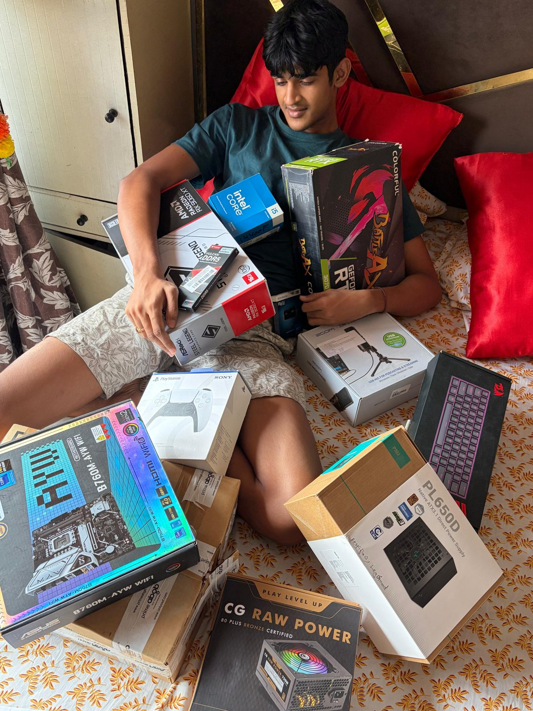
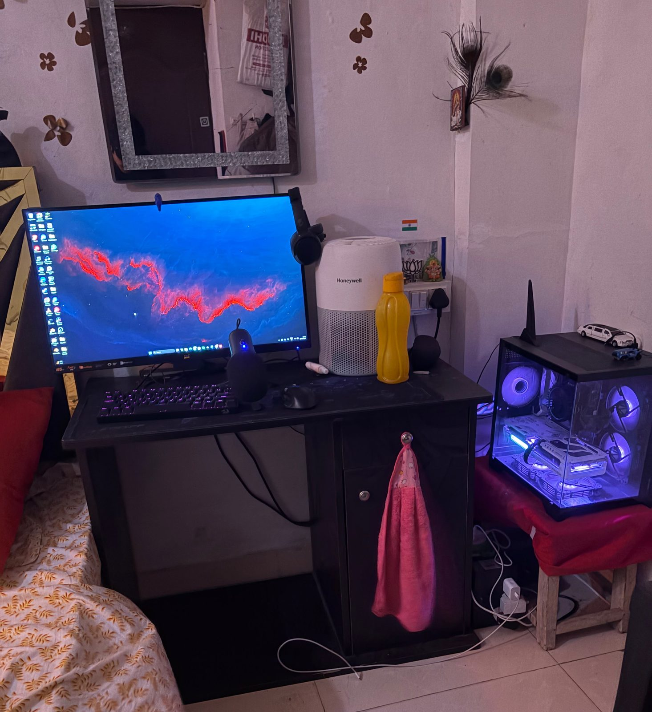
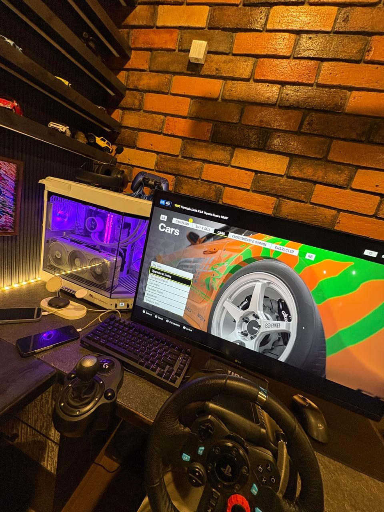
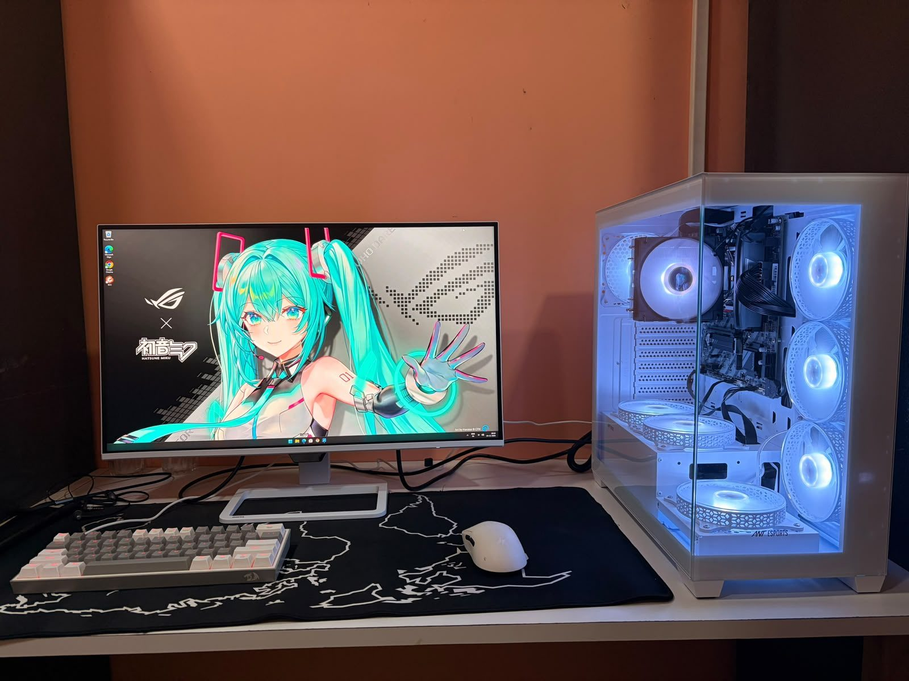

Hardware · Support
Desktop & workstation builds
Seven custom PCs assembled, upgraded, and maintained — component selection, cable management, Windows installs, driver setup, and hardware troubleshooting.
Portfolio — 2026 · Thane, IN
Computer engineering graduate with hands-on experience in PC building, machine learning, computer vision, and robotics. I build, troubleshoot, and document systems — from custom desktops to entry-level deployments.




01 — Builds
Seven custom builds documented with photos and spec sheets. The first is my own original build; the rest followed. Use the switch to read each spec sheet in casual or professional language.
02 — Experience
I'm targeting an L1 Hardware Desktop Tech Engineer role. My background combines hands-on PC building with machine learning, computer vision, and robotics — plus the troubleshooting and documentation habits that come from maintaining my own machines.
Hardware · Support
Seven custom PCs assembled, upgraded, and maintained — component selection, cable management, Windows installs, driver setup, and hardware troubleshooting.
Windows · Linux · Deployment
Comfortable with Windows and Linux installs, drivers, backup agents, and deployment checklists. Basic virtualization concepts; ready to learn HCI/SDS and datacenter tooling.
Networking · Storage
Familiar with switches, firewalls, storage systems, and basic network troubleshooting. Open to customer installations and onsite support.
ML · Vision · Robotics
XGBoost price prediction, OpenCV/YOLO vision projects, an FFmpeg → COLMAP → Gaussian Splatting pipeline, and ESP32 robotics — including an IIT Rowboatics-winning boat.
Toolkit
Hardware support · deployment · troubleshooting
03 — Contact · available for work
I'm looking for an Desktop Tech Engineer role. I can assemble and deploy desktops, workstations, and entry-level servers; install Windows/Linux, drivers, and backup agents; troubleshoot hardware, OS, and basic networking issues; and support customer installations and onsite visits. I'm also keen to learn HCI/SDS and datacenter technologies.
Available for full-time roles around Thane and Mumbai.